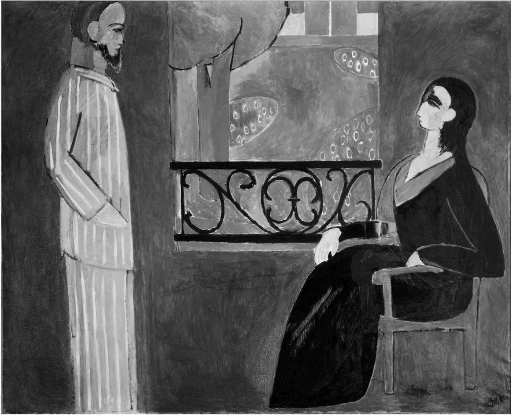
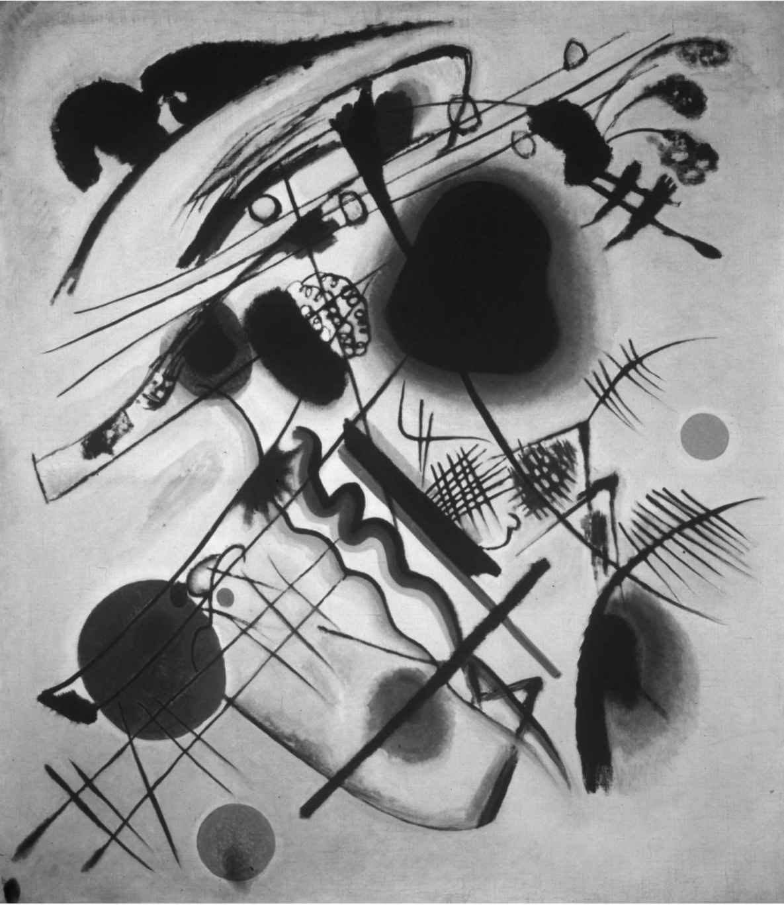
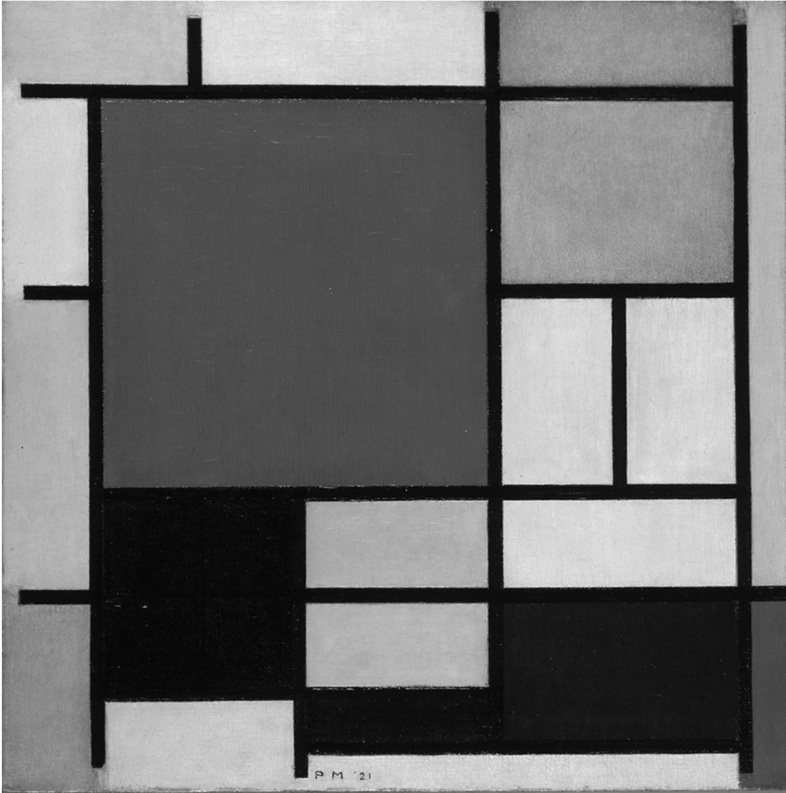
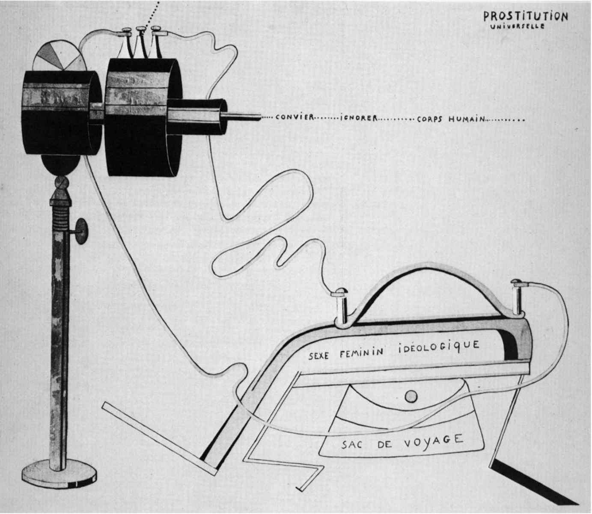
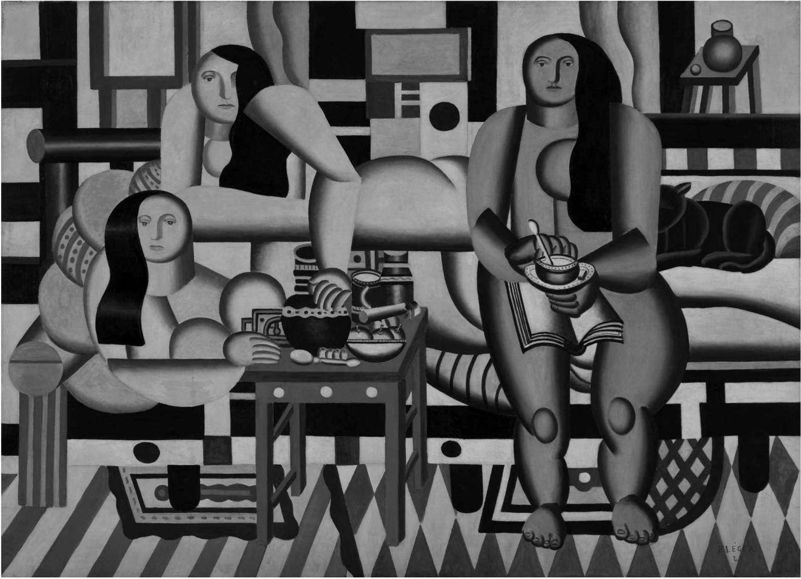
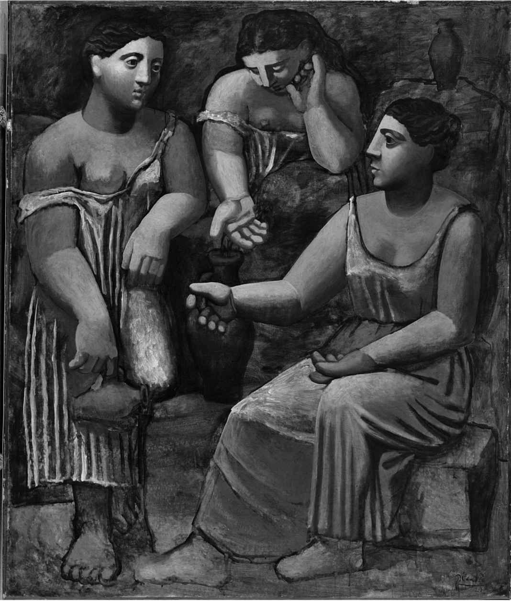

埃兹拉·庞德，致费利克斯·谢林 [34] 的信件，
1922年7月
奥斯卡·施莱默 [35] 1925年谈包豪斯学校
从魏玛迁至德绍
现代主义合作
纵横古今，伟大的艺术家往往知己知彼：他们的合作（或竞争，比如巴勃罗·毕加索和亨利·马蒂斯）来自一种对“时下热点”的感知。这种感知可能远超对发表过明确宣言的艺术运动的认识。克洛德·德彪西或许是聆听《春之祭》的第一人，他坐在钢琴前，跟它的作曲家一起弹奏了整部曲子，但后者同时又是莫里斯·拉威尔 [36] 、埃里克·萨蒂、让·谷克多、安德烈·纪德 [37] 、保罗·克洛岱尔 [38] 和保罗·瓦勒里 [39] 、巴勃罗·毕加索、费尔南·莱热，以及安德烈·德兰 [40] 的朋友。和斯特拉文斯基一样，毕加索也对所有艺术领域的巴黎前卫派了如指掌，这才为斯特拉文斯基的《拉格泰姆》（Ragtime ）设计了别出心裁的封面（经由布莱兹·桑德拉尔推荐给海妖出版社而得以问世），为谢尔盖·达基列夫 [41] 出品、萨蒂创作的《游行》设计了服装和布景。关于艺术的进步，从传记中了解到的信息往往比评论家的声明或宣传要多得多。正是斯特拉文斯基、拉威尔、萨蒂、莱昂·巴克斯特 [42] 、亚历山大·班耐瓦 [43] 、马蒂斯、毕加索、谷克多和纪德等人与达基列夫的俄罗斯芭蕾舞团中其他很多人之间在实践中精彩互动，才有了像《春之祭》和《游行》这样明显前卫的作品，以及在观念上更加传统但在风格上已属现代主义的作品，例如根据舒曼的作品改编的《狂欢节》（Carnival ），以及弗朗西斯·普朗克 [44] 的芭蕾音乐组曲《牝鹿》（Les Biches ）。俄罗斯芭蕾舞团是首屈一指的现代主义团体，相当一部分原因是达基列夫具备让前卫艺术家精诚合作的独特能力。
艺术家之间的这种合作，像桥社 [45] 的表现派画家（埃恩斯特·路德维希·基希纳、埃里克·赫克尔、马克斯·佩希施泰因等人）之间的合作，抑或勋伯格与阿尔班·贝尔格 [46] 和安东·韦伯恩 [47] 的合作，全都亲密无间；这让他们——乃至我们——感觉到一场“现代主义运动”已是大势所趋，就像庞德和艾略特读到乔伊斯的《尤利西斯》前几章的打字稿，便意识到可以通过使用典故把过去和现在并列起来——随后便写下了《诗章》、《小老头》和《荒原》初稿。艾略特在《传统与个人才能》（1919）中主张作者自觉意识到“从荷马开始的全部欧洲文学，以及在这个大范围中他自己国家的全部文学，构成一个同时存在的整体，组成一个同时存在的体系”， [48] 这可以解读为对当时三位作家的作品的理论说明。然而，推断艺术的初衷往往是我们的事，因为伟大的现代主义者并不总会解释自己或撰写宣言。毕加索和布拉克创造了立体主义，却没有解释过一个字。他们只是观看和讨论彼此在画室中的实践，而我们只能推论在1907-1915年期间，他们从“分析式”立体主义到包容性更强的“综合性”立体主义的“进步”，前者主要涉及从多种视角对物体进行相当崎岖粗犷的几何变形，使用的是一种单色画法，几乎看不出物体的局部色彩（因而一幅头部肖像看上去可能很像嶙峋的风景），而后者使用了更多的色彩和更扁平的几何形状，看上去像是在画布表面对元素加以拼贴。
就连自我意识更强、政治上更为激进的艺术挑衅形式，比如很多（关于绘画、音乐、性欲，诸如此类的）“未来主义宣言”，也往往不过是将艺术与观念就事论事地结合起来而已。另一方面，未来主义和达达主义艺术家们都是典型的偏爱在一个夸夸其谈的理论框架内工作的人，通过传播革命性思想观念，声称自己是“先锋派”。其他宣言的撰写则更偏重于技巧，就像庞德请F. S. 弗林特为意象派诗歌撰写的那份宣言，鼓吹“直接表现‘事物’，无论主观还是客观事物”，以“音乐片段的序列”来进行诗歌创作，如此这般。
进步的概念——艺术与抽象
对于处在知识巨变时期的现代主义艺术运动而言，这类观念极其重要。因此，关于艺术的“必要”演变的思想成为整个现代主义运动的一个重要组成部分，也就不足为奇了。这意味着批评性解释与宣言同样必不可少。这种需要解释的现代主义变革的一个典范是抽象在绘画中的发展，它摧毁了19世纪的现实主义传统，所创作的现代主义艺术彻底背离了屈从地清晰复制现实世界的目的，即便这种复制神乎其技。因此，它坚信观者须对艺术作品本身的规律有所了解，从而引发了作品对现实世界的更为间接的影射关系。
最重要的发展有两个。第一个是前文中已经提到的，即绘画摆脱了表现“真实的”局部色彩的束缚，使得纯色便可产生自身的情感效果，如晚期的梵高，以及马蒂斯的作品。这对康定斯基尤其重要，对他而言：
随之而来的发展意义更为重大：艺术家们越来越强烈地认识到在绘画过程中简化物体的重要性。德斯蒙德·麦卡锡 [49] 在其为1910年伦敦后印象派画展的目录所写的序言中对此做出了解释，其中借用了音乐的隐喻（近乎言之凿凿地表明绘画与音乐一样，有其“自己的”语言）。他说：
这两种方法都捍卫了艺术作品的自主性，因为有了这一点，我们就被迫考察作品本身，而不只是将其看作对现实的反映。色彩一旦摆脱了表现局部具象这种属性的束缚，即可被“调和”——
如马蒂斯所说——从而创造出一种音乐效果：
罗杰·弗莱 [50] 就这些问题与保守的大众对峙，并试图在1912年第二次后印象派画展中通过引介一种新的批评语汇，来解释这种新艺术的优点：
这段话强调了我们如此这般地思考这类艺术作品，并且至关重要：我们体验到“这一画派的所有艺术家所独有的、在设计上追求装饰效果的统一性”。特别是马蒂斯，“致力于通过他富有韵律的线条的连续性和流动性，通过他的空间关系的逻辑，以及最重要的，通过他对色彩的全新运用，让我们对他的形式心服口服”。
对此，我们可以在精彩的画作《谈话》（La Conversation ）中窥见一斑，此画创作于1909-1912年，并在1912年第二次伦敦后印象派画展中展出（见图3）。这幅画作中蓝色、红色和绿色的色彩调和十分醒目。对房间和花园使用的色彩之间存在着强烈的情感反差：房间里是偏冷的蓝色和黑色，而外面却是偏暖的绿色和红色。树木和花坛在形状上也呼应了谈话中的这对夫妻。但这很难说是顺畅的谈话——马蒂斯和他太太阿梅莉的身形如僧侣般僵硬；他们的姿态取自马蒂斯在卢浮宫里看到的一块石碑，碑上描绘的是汉谟拉比站在安坐的女神沙玛什面前。阿梅莉看来是在发号施令，而她得到的答案很可能就是我们在阳台的铁艺栏杆上看到的“NON”（“不”）。但这幅画之所以符合弗莱及其同行所描述的抽象，乃在于对画面图形的简化、对精心设计之平衡的意识，以及对局部细节的漠不关心。弗莱指出：

图3 亨利·马蒂斯，《谈话》（1909-1912）。绘画中采用的抽象手法极为老道，乍看之下像是纯粹孩子气的涂鸦
在这一时期，弗莱只在伦敦看过康定斯基早期的一些作品，但他基于抽象绘画的效果会越来越像音乐效果这一假设而做出的关于进步主义的抽象的预言，却在康定斯基这里得到了证实，后者早期作品中用城堡、高塔、鱼叉和小船构建的末日般的象征主义变得越来越难以辨认。这里复制的画作（图4）来自1915-1921年这段时期，当时康定斯基转向了纯粹生物形态的形式，并继而（在包豪斯学校）转向了几何抽象。在《黑点》（Schwarzer Fleck ）中，我可以看到一个形似大蛇的东西，也许是一条带桨的小船，位于康定斯基经常画的位置，即左下部；就在“船”的上部，或许还可以看出一对斜倚的夫妇的大致轮廓，这是他常用的主题。但这或许只是我们的想象：色彩，以及形状之间的动态关系，才是重点所在。

图4 瓦西里·康定斯基，《黑点》（1921）。画中的生物形态抽象，不再是自然主义描绘，而是转向了虚构的物体
和我一样，在看到这一时期的画作时，叶连娜·霍尔–科克也觉得很难回答这个问题：“到底是在什么时候，康定斯基才开始把完全自由的、与自然或任何其他眼熟的物品毫无相似之处的全新视觉元素引入画中的？”但毫无疑问，终极目标是更大程度的抽象。在康定斯基1910-1939年间创作的十幅惊人的“构成”（Compositions）作品系列中，这一点最为引人注目。
关于抽象的观念以全欧洲的各种语言不断重复，试图表明现代主义艺术家“愈来愈”致力于放弃照相机般的酷似现实，仿佛他们的目标都是通过不断做减法来变得越来越“抽象”；然而正如我们所见，他们使用的方法却大相径庭（皮特·蒙德里安曾遗憾地认为，毕加索根本未曾真正领会抽象）。
艺术的新语言
这种现代主义的进步被解释为对此前艺术的发展和修正——这样一来，与一种早期的、更加明白易懂的艺术之间的联系便显而易见了。然而，那些改变了艺术语言本身的艺术家才是更为激进的一群人。现代主义早期的英雄人物——毕加索、乔伊斯、康定斯基、勋伯格、斯特拉文斯基、庞德、艾略特、阿波利奈尔、马里内蒂——在各自的艺术领域都曾扮演过这样的角色。毕加索创作了《亚维农的少女》（Demoiselles d'Avignon ，1907），画中那些丑陋裸体表情痛苦、情绪紧张，其中一些人的脸看上去像是伊比利亚的面具，另一些人的脸则如梅毒患者般严重变形。乔伊斯创作的《一个青年艺术家的画像》（A Portrait ofthe Artist ，1914）的开篇，精彩呈现了一个小孩子的视觉感受和意识流。勋伯格创作的《第二弦乐四重奏》（Second String Quartet ，1908），在最后一个乐章中加入了人声，人声不断升高，令一部没有调性中心音可参照的音乐“气象一新”。斯特拉文斯基创作了《春之祭》（1913），那一股原始的野性在当时是明显的不和谐音，旋律变化是前所未有的，在“大地之舞”乐章的最后高潮部分出现了狂乱，一位献祭的少女舞蹈至死。
阿波利奈尔、桑德拉尔、庞德、艾略特、戈特弗里德·贝恩 [51] 、雅各布·范·霍迪斯 [52] 、奥古斯特·施特拉姆等诗人无逻辑的自由联想，同样挑战了理性秩序的语言本身及其与社会依从性有关的方面。“我们走吧。”艾略特笔下的普鲁弗洛克说道，于是我们便从波士顿肮脏不堪的街道出发，像这首诗本身一样，那些街道或许也通向一个“压倒一切的问题”。然而在一首包含有至少15个问题的诗中，很难确定哪一个才是压倒一切的问题，因为它们看起来都会让普鲁弗洛克窘迫不堪。这首诗的创新之处不仅在于它范围和数量惊人的典故，引用了但丁、拉福格 [53] 、赫西俄德、《传道书》、马弗尔 [54] 、施洗者约翰等，也不仅在于它戏仿了莎士比亚和斯温伯恩 [55] 等很多人的风格，而且在于它在段落间留下了许多空白，创造了我们至今仍未完成的前所未有的工作；它的段落遵循着联想而非叙述逻辑，甚至连心理上连贯的秩序感都不存在，那些空白同时也是难以逾越的观念鸿沟。普鲁弗洛克真的在直面宇宙的奥秘，还是他只是个耽于幻想的迂腐文人，不敢去茶会向某位迷人的女性求爱？跟众多的现代主义艺术作品一样，这里也需要由读者、观众或听者来考察一个碎片与下一个碎片乃至其后许多碎片之间的关联，探究和领悟与此前的艺术全然不同乃至背道而驰的逻辑；一百年过去了，这对我们仍不啻是一项挑战。
在有些艺术家的概念里，如此殚精竭虑地追求一种脱胎换骨且毫不妥协的艺术作品编排方式是他们的基本使命：比如说那些追随勋伯格超越《第二弦乐四重奏》和《月光小丑》（Pierrot Lunaire ）的渐进式无调性，发展出新的十二音列音乐的规律的艺术家就是如此。的确，那些旨在彻底改变范式的先锋派同样也希望被写进不断发展的《艺术史》中，勋伯格就是这方面的极佳典范。因此，勋伯格抨击了那些在他（略有夸张地）看来为德国音乐“立法”的过去的“原理”或“法则”，但随即又出台了一些自己的法则；1921年夏，他跟弟子约瑟夫·鲁费尔说他“有了一些发现，德国音乐的至尊地位借此可以再续100年”。1924年，勋伯格的弟子欧文·斯坦在题为《新形式原则》（Neue Formprinzipien ）的文章中，首次向世人解释了他的“十二音列”新体系的特点。笼统地说，一部作品的乐章必须从某一“列”音符开始写起，也就是使用了半音音阶全部12个音调的“基础音符集”，其在整部作品的顺序固定不变。音列的顺序可以反行、逆行或逆行反行，且可以从这12个音符的任何一个开始。（这就是说，作曲家在音乐创作中可以随意使用48种音列变形，但这种技法也有大量的约束条件。）
勋伯格作于1924年的《管乐五重奏》作品第26号是完全根据此法谱写的第一个大部头作品。（多年后的1952年，斯特拉文斯基在自己“皈依”一种准序列作曲法的那段时期，潜心研究的正是这部作品。）十二音音乐看起来很像一种几何构图的模块法——其遵循一系列规则，这些规则很可能会泯灭任何个性化的表现力——并且在勋伯格看来，这一规范是客观而科学的：他声称，他的实验发现了音调的“非毕达哥拉斯”组合，从而揭示了声音之间关系的真正本质。绝妙的是，到1925年7月23日，阿尔班·贝尔格已经完成了他的《室内协奏曲》（Chamber Concerto ），那是一部高度系统化的门徒作品，将无调性和十二音音乐的创作发展到了复杂难解、连数字都带有象征意义的高度。然而，十二音技法的细节倒没有那么重要，重要的是勋伯格及其诠释者，特别是特奥多尔·W. 阿多诺 [56] ，在为这种技法赋予哲学和准科学必要性的过程中，将各种先锋派思想古怪地交融在一起。
因此，很多现代主义活动中常常会存在一种“虚假的科学主义”——这是一种对待现代世界的态度，它要求各类艺术使用理性的创作方法，以便我们着手处理更为基本层面的现实，这种基本现实往往被想象成艺术和科学（乃至整个茫茫宇宙）所共有的。皮特·蒙德里安及其荷兰风格派运动 [57] 的追随者们便发出过这类声明，还给它们加上了一层神秘主义神学的形而上的外衣，使之变得更加复杂。我们在欣赏蒙德里安1917-1921年这个时期的绘画作品时，可以看到作品除了它本身外别无模仿的主题，因为它所属的那种现代主义传统对于如何使用一种受到约束、受到规则制约的直线和矩形色彩平面语言有着极为理论化、系统化的观点。它产生了一种比其他人的作品更加“纯粹”的抽象艺术，但同时也产生了一目了然的风格（同时预言了后来的几何抽象）。例如，创作于1921年的《红黄蓝黑的构成》（Composition with Red，Yellow，Blue and Black， 图5）就有一种“相互角逐的力量之间的动态平衡”；其中有“狭窄的边缘平面”和“占据”着余下大部分面积的一个红色大方块，供人们对“空间和比例进行各种解读”，诸如“许多小平面起到了累积的支持作用”，与“红色大方块分庭抗礼”。
蒙德里安在写到这类艺术时用语极为含混暧昧，仿佛在假冒哲学，因为他的创作规则，乃至他关于自己绘画的预期效果的规则，都受到同样的极为笼统的观念的影响，如“普适性”或“平衡色彩关系”。他的画作看似否定了个体的表达，因为“只有当个人不再挡道时，普遍性才能一览无余”。目标是画作内部的和谐，于是：“有了（以确定的比例和平衡形成的）色彩和维度之间关系的韵律，绝对性才能出现在时空的相对性之内。”我们是否欣赏蒙德里安（乃至是否钦佩他如此富有哲思）取决于我们能否感受到和谐与平衡，以及能否直观地感受到画面比例的那种逾矩之趣。（这种平衡本应是乏味的，但正如沃丁顿 [58] 所说，蒙德里安画作的比例不符合任何显而易见的数学比例。）
在绘画领域，蒙德里安既是一个优秀的新柏拉图主义者，又是一个“新造型主义者”，我们在他这里看到了一个意义重大的起点，开始要求把艺术理解为某种理论的具体化概念的标本（这个过程为时甚久，直至后现代主义时期的观念艺术）。因为他被迫在绘画中寻找一种语言，一种符合其关于简单化的宗教和哲学信仰的语言（这种简单化须超越任何象征意义或唤起人们对真实世界之回忆的物体，如他的早期作品中出现的那些）。

图5 皮特·蒙德里安，《红黄蓝黑的构成》（1921）。数学构造的平衡与和谐
这种哲学推动了绘画的发展。这是荷兰风格派运动的艺术家以及同时期的其他艺术家们共同的动机，他们梦想着一种简单明了、毫不妥协的语言来满足他们的需要，超越日常生活中功利实用的暧昧含混。正如勋伯格等人重写了此前公认的音乐调性语法，蒙德里安及其同行也力图寻找一种不受制于局部模仿的绘画语法，只是跟勋伯格的音乐一样，这种语法也须接近“更为基本的现实”。在这类作品中，我们很难看到任何东西能够实现其所声称的效果。作品或许可以作为一种象征符号，提醒其追随者这样一种通神论宗教信仰的存在，但其效果大多是耽于深思的，因而也造就了个体的转变。这样的作品更像和谐的设计而非宗教符号，因而能够带给人巨大的愉悦。
现代主义与艺术运动
上文中讨论的艺术家是不是“所谓（the）现代主义运动”的一部分？如果这么说意味着他们拥有同一套达成集中共识的观念（如政治纲领），那就不是，哪怕如前文所述，其中某些观念得到了非常广泛的传播。鉴于这个时期标志性的多元和分歧，我们可以看到，现代主义先锋团体——漩涡派、意象派、第二维也纳乐派、荷兰风格派、达达主义、超现实主义，诸如此类——产生了一种严肃的代际更替。而当理念上多少有些相似的团体走到一起后，如漩涡主义运动那样，我们就能看到庞德、艾略特、乔伊斯和刘易斯 [59] 以及与他们有密切接触的休姆 [60] 和弗林特等人，在一场“运动”中临时性地通力协作，通过运动，可以造就一种集体自我意识，其最明显但往往是虚假的彰显方式乃是个中人士发表的某个宣言；如温德姆·刘易斯在伦敦主编的两期《爆炸》（Blast ）杂志上发表的宣言，他以为如此一来便在所有艺术领域引发了一场“伟大的现代革命”，直接针对“哀叹的老家伙”和“与猴子称兄道弟”的旧式人物。在他——以及庞德——看来，这是基督纪元的终结。
同样的自我意识在1909-1914年间也影响了康定斯基和勋伯格，以及蓝骑士 [61] 团体的其他成员（包括奥古斯特·马克、弗兰茨·马尔克和加布丽埃勒·明特）。他们的1912年《年鉴》证明，在慕尼黑也发生了类似的思想变革。这意味着在“理论”崛起的很久之前，很多现代主义艺术都是通过曾赋予其灵感的准哲学、神学和心理学揣测来理解的，比方说康定斯基的《论艺术的精神》（On the Spiritual in Art， 1912）、W. B. 叶芝的《幻象》（A Vision， 1925），以及荷兰风格派团体的著作。
我们会看到，一些先锋派团体采用的方法有着显然更直接的政治目的，特别是早期的德国表现主义和未来主义运动、1918年后德国的达达主义，以及包豪斯学校的各类课程，这些都深切关注现代性，特别是技术在社会中的地位。因为，正是这一时期的建筑留存至今并定义了一个过往的时期；彼时新近发明的包豪斯风格建筑、家具设计和印刷规则在我们的时代仍依稀可见。他们尤其关注人与机器之间不断变化的关系。正如莫霍利–纳吉 [62] 在一篇题为《构成主义与无产阶级》（“Constructivism and theProletariat”， 1922年5月）的文章中所说：
他继而说：
这种乌托邦式的纲领通常旨在成就民主和平等，不过鲜见成效，查理·卓别林的《摩登时代》（1936）就让整个欧美的大量观众看到了这一点。
弗朗西斯·皮卡比亚 [63] 和马塞尔·杜尚也采纳了一个同样滑稽却不无恐吓的视角来探讨机器，特别是两人在1915-1917年同处纽约的那段时期，他们在那里传播类似达达主义的思想，并对现代主义在美国的发展产生了巨大影响。皮卡比亚创作于1916年的《全球卖淫》（Prostitution Universelle， 图6）是有着类似主题的作品之一，这幅画将女人描绘为一架脱离了肉体感官反应的机器，还暗含着不少厌女思想。此时，皮卡比亚宣称，“现代世界的精神特质是机器……它实际上是人类生活的一部分——或许正是人的灵魂”。人们可以理解这里和皮卡比亚的《美国女郎》（Young American Girl ）中有关能源和技术的隐喻——那个女孩本质上就是一个由男人掌控的现代物体（就像E. E. 卡明斯 [64] 的“她就像新车上路”一诗将男性在交配中的掌控比喻为开车）。这种早期的玩笑式无政府主义，以及达达主义所激发的对性与机器的现代性的讽喻，后来有了非常复杂的发展，这在杜尚著名的《大玻璃》（Large Glass， 1915-1923）及此前的诸多作品中可见一斑。
正是通过当时的批评解读（如上文引用的弗莱和贝尔 [65] 的文章）而不是辞藻华丽的宣言而得以广泛传播的思想，才使我们最近距离地了解到，体验全新的艺术作品会带来怎样的思想和情感变化。正是因为很多作家的反应，像是沃克塞尔和阿波利奈尔对早期立体主义的反应，才使得艺术家的新语言被更广泛地接受——这是由于作家们发明的话语能够接近所涉技术的细部特征。因此，我们对于布拉克和毕加索在1910-1911年的创新意图的认识，与后来对他们作品的外推性解读之间存在着一道鸿沟，那些解读，例如格莱兹和梅青格尔的著作，以及1912年“黄金分割派”（Section d'Or）画展的宣传，促成了立体主义先锋派概念的创立。
正是因为有了这样的接受度，才使得使用各类介质创作的艺术家们意识到有一场席卷全欧洲的运动，那场运动希冀“创新”并自视为“现代”，或现代主义。

图6 弗朗西斯·皮卡比亚，《全球卖淫》（1916）。机器时代的人类观
新古典主义
然而，这种艺术语言的自觉的先锋派变化和一种或许更加简单、更为大众所接受的“创新”欲望之间还是有区别的。很多艺术家不愿被人看作是被束缚在他人通过宣传而分辨出来的“反动”和“前进”倾向上，无论结果是好是坏。斯特拉文斯基就是个臭名昭著的例子。他创作了20世纪最具革命性的一些作品，却从未隶属于上文提到的某种现代主义运动。尽管如此，他在颇具实验性和对抗性的芭蕾舞音乐，特别是《春之祭》（1913）和《婚礼》（Les Noces， 1914-1917，管弦乐创作于1923年）之后，却以一种简单得多的语言，乃至一种新古典主义的混成曲风格，创作了《普尔钦奈拉》（Pulcinella， 1919-1920）等作品，实属咄咄怪事。这部歌声来自乐池的芭蕾舞音乐作品，是对被认定为由佩尔戈莱西 [66] 原创的那些作品进行了管弦乐改编，对作曲进行了极少的改动，并由毕加索设计服装。作品古典、清澈，全无俄罗斯风格，与其说有德国气度，倒不如说有法国派头，因而险些沦为这个时期其他芭蕾舞剧的模仿拼盘——那些芭蕾舞剧，像雷斯庇基 [67] –罗西尼 [68] 的《奇妙玩具店》（La Boutique Fantasque， 1919）和托马西尼 [69] –斯卡拉蒂 [70] 的《快乐的女士们》（The Good Humoured Ladies， 1917），也同样是对前人音乐的添油加醋的改编。
斯特拉文斯基认为《普尔钦奈拉》是另一部革命性作品，其管弦乐音色交叠宛如色彩的反差（例如长号与低音提琴精彩而奔放的二重奏）。但这部芭蕾舞剧太过迷人，以至于不像是部实验作品，优美的旋律与毕加索的新古典主义和立体主义的即兴喜剧人物造型相结合，使得这部作品风靡一时（再次多亏了达基列夫）。1934年，康斯坦特·兰伯特 [71] 可以抱怨说，“没有创作冲动又对风格全无感觉的作曲家，可以使用中世纪的语词，将其套进贝利尼 [72] 的风格，加上20世纪的和声，以18世纪的序列和形式化方法对二者加以发展，最后把整部作品搞成爵士乐队配乐”。但斯特拉文斯基不是那种作曲家；自《普尔钦奈拉》以降的伟大的新古典主义芭蕾舞曲，从《阿波罗》到部分采用十二音技法的《竞技》，都是当今现代芭蕾舞剧库中的核心作品，当然这也要归功于乔治·巴兰钦 [73] 的天才编舞。
斯特拉文斯基被勋伯格一党斥为反动倒退，说他未能掌握艺术语言真正的进步主义艺术发展的内在辩证法：
勋伯格听说了这次采访，并以1926年7月24日的文章《伊戈尔·斯特拉文斯基：餐馆老板》（“Igor Stravinsky: Der Restaurateur” ）作为回应。文章开篇第一句话就是：“斯特拉文斯基嘲弄了那些渴望谱写未来音乐的音乐家们（他们可不像他那样只想写当前的音乐）。”这是两位伟大的作曲家（及其拥趸）
为争夺长期影响而宣战：勋伯格被奉为进步的一方，而斯特拉文斯基却被（阿多诺，直至1948年）诋毁为陷入“幼稚的”倒退状态，创作出了新古典主义的大拼盘。
是作为一种多少有些组织的运动的一部分，还是仅仅作为某种流行或时髦风格的“当代”开拓者——随着现代主义的发展越来越政治化，这两者的区别变得越来越重要。在阿多诺看来，勋伯格遵循的是一个马克思主义者眼中的历史的内在规律：
正如他在《现代音乐的哲学》（Philosophy ofModern Music ）的“勋伯格与进步”一章中所说的：
这是写进美学的马克思主义理论，有对历史的内在辩证法的解读，也有对个人主义的资产阶级的“假性意识”的质疑，在那以前一直被广为认同的音乐传统恰恰是那种假性意识的体现。
然而，1920年代的参与者们却并不认为自己转向了过往的艺术。因为这些引经据典的延续性主张采纳了一种全然现代主义的、戏仿和反讽的方式，直接批判性地反对其受众的社会设定。它还要更剑拔弩张，因为它接替的是一个实施极为严肃的形式实验的战前时期。正如保罗·德尔梅 [74] 所说，“一个生气勃勃、充满力量的时期过后，必然是组织、盘点和科学的时期，也就是古典主义时代”，而皮埃尔·勒韦迪 [75] 也认为，“幻想让步了，对结构的需求日益增加”。如此重新审视艺术家与过去的关系，开辟了一种风格自觉的美学，因而让人们对现代性与过去之间的反差有了敏锐感知。“《普尔钦奈拉》是我对过去的发现，因为有了这样的顿悟，我后期的整个创作才得以继续。”斯特拉文斯基如是说。这部作品应以艺术史的角度来审视，其技巧为反讽开辟了空间，而反讽恰是格调高蹈的现代艺术的首要特征：“传统得以保留：圆舞曲、加洛普舞曲或进行曲的特征被简化为刻意夸大并充满讽刺意味的类型模式，从而以讽刺漫画的手法揭示出社会原型”，不仅是斯特拉文斯基的作品，六人团 [76] 、普罗科菲耶夫、肖斯塔科维奇、拉威尔等很多人都是如此。但同时，在更严肃的作品，如斯特拉文斯基回到巴赫式对位法的《管乐八重奏》（Octet ）中，也有着对传统更深层次的认知。斯特拉文斯基用借自绘画的语言，认为这部作品是一个类似几何抽象的空间物体：“我的《八重奏》不是一部‘情感’作品，而是建构在自成一体的客观元素上的音乐作品……一个自有其形式的物体。和所有其他物体一样，它也有重量，并在空间中占据一席之地。”正如梅辛所说：
这种风格多元性，以及在某些情况下由简单化带来的明晰易懂，是战后时期的典型特征，在这一时期，各种现代主义风格风靡一时，在这种借用历史正典典故的基础上创作的艺术作品的数量也大大增加了。所有这些都是战后艺术界“呼唤秩序”
的一部分（就更多的二流艺术家而言，这还跟他们普遍保守地召唤更具爱国主义和民族主义的政治秩序有关）。各类现代主义者都转而改编过去的作品，风格变得折衷、纷纷戏仿、颇具新古典主义的复古倾向，如此这般。
例如，莱热的《大早餐》（Le Grand Déjeuner， 图7）就不再如《城市》那样颂扬现代生活的同步性，而变成了新古典主义的机械化版本。这些人是“女奴”，因而让我们想起新古典主义画家让·奥古斯特·多米尼克·安格尔 [77] ；银灰的肤色光可鉴人、有如雕刻，令人回想起英勇而坚忍的大卫的形象；膨胀的女体让人想起尼古拉·普桑 [78] 的古典风格，与同时期毕加索的新古典主义作品《泉边三浴女》（Trois femmes à la fontaine， 1921，图8）风格相似。毕加索甚至还为这幅颇具雕塑感的作品画了一幅文艺复兴风格的红铅粉草图习作，那幅习作影射了普桑的《井边的以利以谢和利百加》（Eliezer and Rebecca at the Well， 1648）。但它还是最像希腊的殡葬雕塑，画面的色调又显然是悲伤压抑的，这倒是自相矛盾，因为“大早餐”这一主题通常暗含着庆祝丰收的喜悦。伊丽莎白·考林 [79] 指出，这幅画也许是战后哀悼之举。

图7 费尔南·莱热，《大早餐》（1920-1921）。立体主义巨作，没有为之前裸体画作中体现的色情留下多少空间
这种艺术绝不仅仅是轻言否定或单纯戏仿：那同样是新古典主义和后现代主义的区别所在。艺术中的新古典主义诉诸抽象、绝对、构建、纯粹、简洁、直接和客观等观念，标志着人们开始退而信仰“普世”艺术语言，而不是激进地发明全新语言。
在某些人看来，毕加索公开模仿新古典主义风格的转变也像是抛弃了先锋派实验。（他还对模仿安格尔很感兴趣，例如他为维尔登施泰因夫人所画的肖像。）约翰·伯格 [80] 后来认为，这些作品：

图8 巴勃罗·毕加索，《泉边三浴女》（1921）。雕像般的女人：新古典主义与前辈艺术的竞争
传统
对于他们身处其中的文化，现代主义者的视野非常宽广。艾略特虽要求有“历史感”，也还是在《荒原》中为玛丽·劳埃德 [82] 和“莎士比亚式的‘拉格’ [83] ”留有空间。然而，如果只阅读这部长诗的第一部分，就必须至少了解一些乔叟、莎士比亚、瓦格纳、《旧约》、希腊和“草木”神话、波德莱尔，等等。的确，正如艾略特在其《传统与个人才能》中所说，“不仅他［诗人］的作品中最好的部分，而且最具有个性的部分，很可能正是已故诗人们，也就是他的先辈们，最有力地表现了他们作品之所以不朽的部分” [84] ，因为在这里，标新立异的原创性来自艾略特选用欧洲文学经典的方式，在他看来，他利用这种方式对跨越时间长河的文化间关系提出了一个复杂的观点。乔伊斯、毕加索、斯特拉文斯基、贝尔格、勋伯格、托马斯·曼等许多人都拥有这种改编过往作品的意愿。在斯特拉文斯基看来，传统“来自一种自觉且经过深思熟虑的接受……方法被替换了：［而］传统却得以发扬，为的是产生新作品。传统因而确保了创作的延续性”。20世纪的现代主义者都在自觉地反思他们的作品和他们与之竞争的过去的作品之间有何关系和反差。这种反思浸淫在历史中，并通过主题的重复（从而使其具有普世性）以及与过去的同步对照（这经常会赋予其相对主义的讽刺意味）起作用。然而，《三便士歌剧》中模仿巴赫的众赞歌与贝尔格在其《小提琴协奏曲》中引用大合唱《永恒，雷鸣的话语》（Ewigkeit，du Donnerwort ）的巴赫众赞歌《我心满足》（Es ist genug ）截然不同，前者表明宗教已沦为大众伪善的感伤，而后者在作品中构成了令人难以忍受的挽歌式高潮。两位作曲家都预期其选段会被辨认出来，从而赋予作品以深意，在原作语境下的内涵如此便可作为现代作品的情感意蕴。这种效果远非单纯的混成模仿，因为它们不只是风格上的变异，也唤起了我们这样一种认识：并非出于怀旧目的而将过往作品拿来一用，可以作为我们当下情感的试金石。
这些他山之石为一场自觉的欧洲运动带来了相当大的现代主义色彩。庞德、艾略特和乔伊斯（要知道这是两个美国人和一个爱尔兰人）笃信“欧洲的心灵”——在他们看来，亨里克·易卜生、尼采、柏格森、弗洛伊德、爱因斯坦、马里内蒂等人的思想都对此做出了必不可少的贡献。所有重要的现代主义者都对其他的语言和文化有着敏锐的意识，即便在他们同时深切关注民族主义问题时也是如此（比如叶芝对印度和日本文化就有着跟凯尔特文化一样专注的兴趣）。例如，叶芝、曼、纪德、乔伊斯、斯特拉文斯基的阅读范围都广泛得惊人。毕加索对过往的绘画、勋伯格和贝尔格对过往的音乐也同样博闻强记、信手拈来，其作品在这方面的复杂程度绝不亚于艾略特和乔伊斯。
但是，欧洲重要的现代主义者的作品无不受到非欧洲民族文化的极大启发，在许多情况下这包括非西方文化的方方面面，例如马勒的《大地之歌》（Das Lied von der Erde ）、叶芝的能剧和后期的诗歌、庞德的《神州集》（Cathay ）、布莱希特的《四川好人》（The Good Woman of Sezuan ）和《高加索灰阑记》（TheCaucasian Chalk Circle ），以及黑塞的《悉达多》（Siddhartha ）皆如此。而德国表现派画家、早期的毕加索、达律斯·米约 [85] 、斯特拉文斯基和D. H.劳伦斯等许多现代主义者则醉心于他们视为“原始”文化（主要是非洲文化）的东西，并积极地将其改编和融入欧洲艺术。
实验或高级艺术在美国的发展（早期）也在很大程度上依赖于对欧洲文化的吸收——这在华莱士·史蒂文斯 [86] 、 E. E. 卡明斯，以及早期的威廉·卡洛斯·威廉斯 [87] 等人身上非常明显，这几个人都是亲法派。
威廉斯和史蒂文斯对这一方面尤其感兴趣，这是因为他们对后立体主义绘画有所了解，尤其是1913年在纽约举行的著名的军械库展览会上的展品。威廉斯如此说道：
他在诗中抛弃了叙事顺序，比方说在诗集《致需要者》（Al Que Quiere ）中就是如此——这让他的诗歌很像图画。他想要达到现代绘画那样的效果，例如在《韵律图形》（“Metric Figure” ）那样一首诗作中的视觉画面，这使得他关注事物或物体（就像塞尚和立体派画家的画作一样），并继而关注诗歌中的动态静物的发展。对于他来说，诗歌就像视觉艺术作品一样，是自成一格的物体，有它自己的形状。
在其典型的超现实主义诗集《地狱里的柯拉琴》（Kora in Hell ）的序言里，他说：“真正的价值是赋予物体自身以个性的特质。关联或感伤价值都是虚假的。”他的《春天的旋律》（Spring38 Strains， 收于诗集《致需要者》，大概写于1916年末）是以文字进行立体主义绘画的一次尝试。他的词句和意象碎片在《巨大的数字》（The Great Figure ）一诗中最为明显，这首诗被查尔斯·德穆斯以其画作《我看到了金色的数字5》（I saw the Figure5 in Gold， 1928）加以解读，其创作本身就与威廉斯脱不开干系。当时，威廉斯正在（与施蒂格利茨 [88] 、德穆斯和哈特利 [89] 等人一起）寻找独特的“美国”主题。他关于新事物的观念牢牢建立在现代主义技巧的基础上，但他需要一种同样前所未有的美国主题，在诗歌上摆脱庞德和艾略特的欧洲化传统。在诗集《春天与一切》（Spring and All ）的散文部分，他把抽象的价值与他（像施蒂格利茨一派的摄影师和画家们一样）期待发现美国物体的渴望结合成为“美国场景的视觉现实”。戴克斯特拉 [90] 指出，《致需要者》中“一月的早晨”的首组诗中，每首诗都有一两个经过密切观察的物体，“形成了一‘组’本质上像照片一样的意象”，那首关于手推车的名诗就是其中的典范。
华莱士·史蒂文斯始终是一个继承了某种爱默生式超验主义传统的“美国人”，但他也和威廉斯一样，是艺术赞助人沃尔特·阿伦斯伯格 [91] 和卡尔·范·维克滕 [92] 的朋友，并对绘画界的先锋动态了然于心，其中包括他在阿伦斯伯格的公寓里看到的杜尚那幅著名的《下楼的裸女》。他早期的诗作显然受到了视觉体验中类似相对性的影响，在他自己的时代，他的诗作《观赏乌鸫的十三种方式》（Thirteeen Ways of Looking at a Blackbird， 1917）极好地证明了这一点。如此说来，史蒂文斯华丽且始终巧妙分段的自由体诗便是前卫主义的突出标志。他在发表于1937年的《弹蓝色吉他的人》（The Man with a Blue Guitar ）中华丽地概括了自己的现代主义艺术观，以及我们自认为与世界相处的哲学。那是关于诗歌和绘画中的现代主义艺术如何重现现实的深入思考。
对于很久以后的作家如威廉·福克纳来说，欧洲现代主义是其知识体系的一大部分——他读过乔伊斯等人的著作，后来又在自己的创作中胃口惊人地运用了他们的意识流技巧。《喧哗与骚动》（The Sound and the Fury， 1929）中的昆丁·康普生与普鲁弗洛克和斯蒂芬·迪达勒斯 [93] 一样知识渊博、引经据典和满腹诗情。他生活在康普生家争吵不休的环境中，全家深受南方内战后那段历史的影响。这一切的处理就像乔伊斯笔下的都柏林一样巨细靡遗，此外还有大量复杂的神话和象征结构。例如，《喧哗与骚动》的章节与基督教复活节的三天平行，在这部小说，以及《押沙龙，押沙龙》（Absalom，Absalom ）中，福克纳在小说情节与导致其发生的过往历史的悲剧性启示之间建构了一种艺术上的相互关系。这种福克纳式小说的认识论——它与扭曲的观念和联系之间，以及与口述历史传统之间的关系，是现代主义传统中最复杂的认识论之一，远超詹姆斯和普鲁斯特。在此过程中，福克纳也像伍尔夫一样成为20世纪最堂堂正正的实验小说家之一，因为和伍尔夫一样，他（在后来大体属于现实主义的斯诺普斯三部曲之前）的每一本书都以极具诗情的散文体写成，呈现出一种个性分明而意味深长的形式结构：一个例子就是《我弥留之际》（As I Lay Dying ）中很多交互的意识流呈现出心理上的相互矛盾和插曲式碎段。
威廉斯等人拒绝这种欧洲的支配地位，呼吁为独特的美国题材寻找适用的现代主义技巧，已是后来的事了。但影响力波及全球、超越欧洲现代主义关注议题的“纯美国”的艺术运动，却要到第二次世界大战才开始；并且直到绘画界的抽象表现主义从超现实主义和其他源头中崭露头角，本土的独立美国艺术运动才获得了实验性的原创力，获得了显然生发于本土却又有着国际影响力的重要地位。同样明显的是，在二战后那段时期，沃尔特·阿比什 [94] 、约翰·巴思 [95] 、唐纳德·巴塞尔姆 [96] 、罗伯特·库弗 [97] 、堂·德里罗 [98] 、威廉·加斯 [99] 等人的美国实验小说展现出了比其他任何当代实验性叙事传统（包括囿于理论的法国“新小说”）更强大的原创力、生命力和趣味性。
几乎所有重要的现代主义者都认为自己的作品在很大程度上来自并回应了他们敏锐意识到的早期艺术传统，亦从中引经据典。例如，马蒂斯和毕加索都十分擅长以早期风格作画，从而实现了在创作灵感上大体属于新古典主义的普世性。直到达达和超现实主义运动横空出世，后者极具新浪漫主义风格地强调个人想象和创造力，且大部分作品的目的不仅在于“新鲜”“原创”“实验”或“革命”，仿佛前无古人似的。首先，早期的现代主义者认为传统是历史上界定好的一套惯例，是他们要游弋其间并超越其外的东西——就像德彪西超越了瓦格纳，而勋伯格认为自己的作品是立基于勃拉姆斯之上的。也正因此，才有了韦伯恩《为管弦乐队而作的六首小品》（Six Pieces for Orchestra， 1909-1910）和贝尔格《为管弦乐队而作的三首小品》（Three Pieces for Orchestra， 1914-1915）中马勒进行曲乐章的无调性变形。
当然，某些现代主义者偏爱尽可能全然抛弃过去。这使得其作品强烈彰显原创性，无论在当时还是如今，这些原创性主张的传播往往要付出“无法理解”的代价——以过去的标准来看是这样，索性一股脑抛弃那些标准也一样无法理解。马塞尔·杜尚对过去的抛弃是出于原始达达主义的解放目的，在这方面尤有影响。他著名的《泉》（Fountain， 1917）就是反映这种先锋思想的作品。杜尚买来一个普通的小便斗，上下颠倒过来，并签上“R. Mutt”的化名，来测试观众对于雕塑或“艺术作品”是什么的观念；或许对后来的发展更有意义的是，他还测试了艺术机构，实际上是在询问那些机构未来愿意展出什么艺术作品（如果它们还算艺术作品的话）。这一做法开拓了一系列后现代艺术的核心主题。
文化诊断
鉴于这样一组假设，现代主义艺术家和知识分子自视为严肃的文化批评家。在英国，庞德、艾略特、温德姆·刘易斯、D. H.劳伦斯和奥尔德斯·赫胥黎（以及曼和纪德，还有各地的很多其他人）的文章便确凿无疑地表明了这一点。他们倾向于脱离自己身处的社会并生活在其边缘，遵循19世纪福楼拜、易卜生、王尔德和弗洛伊德等人作为异见人士反资产阶级的传统。例如，艾略特的散文实际上相当保守，最初他模仿朱尔·拉福格那些荒谬自贬的诗歌，后者在讽刺滑稽的诗歌中赤裸裸地展示当时资产阶级的自欺欺人，为他指明了道路。因此也就有了乔伊斯在《一个青年艺术家的画像》中通过斯蒂芬·迪达勒斯来倡导一种与多数人不同的道德观，摆脱传统的政治和宗教约束，这是个体持异见者的经典范例：他在艺术中，特别是在艺术的语言中，而非社会对宗教或政治的需求中，找到了自己的使命所在。这就是身为学生的斯蒂芬，他得知自己讨论易卜生的论文《艺术与生活》“代表了现代的动荡局面和现代自由思想的总和”。因此也才有了《追忆似水年华》中马塞尔的意识从天真接受阶级设定到对其采取超然的主观主义批评态度的演变。并且，这一时期的很多重要作品都基于对过去的高雅文化与当今社会的世风日下之间反差的关注。
探索这种反差的书籍中最广为流传的当属托马斯·曼的《魔山》（The Magic Mountain， 1924），该书在本质上也是一部教育小说 [100] ，根据作者的叙述，书中年轻的汉斯·卡斯托尔普：
如此说来，他与斯蒂芬·迪达勒斯截然不同，但待在疗养院（也就是他的大学）使他卷入了塞特姆布里尼（以埃米尔·左拉及其继承者——包括曼的小说家哥哥海因里希 [101] ——的人道主义和进步自由主义为榜样）和精明的保守主义者列奥·纳夫塔（此人是“反理性”之人，还是犹太人、耶稣会会士、精英主义者、共产主义者，以格奥尔格·卢卡奇 [102] 为榜样）之间旷日持久的辩论中。而在小说接近结束时，我们又听到了佩佩尔科恩的消息（他代表尼采哲学的酒神法则，并以格哈特·霍普特曼 [103] 为榜样）。通过他们，愚笨不堪的卡斯托尔普接触到一个又一个世界观（Weltanschauung ），什么“人道主义、唯灵论、精神分析以及含有诺斯替邪说的原始共产主义”。他来山上参加辩论，本该凌驾于山下的日常社会境况之上，达到一种沉思的超脱状态，但正如我们在后文中看到的那样，卡斯托尔普困境的解决采纳了一种全然不同的非理性方式。
在整部小说中，卡斯托尔普和读者不得不穷于应付那些被人格化的抽象概念，很多人认为这是德国文化的一部分，因此曼希望提出的哲学与文化反差也就缺乏任何真正具体的例证。E. M. 福斯特就通过类似的对现实主义、象征主义和宗教神话之间关系的认识，以具体得多的方式呈现了这类反差：在完成于1925年的《印度之行》（A Passage to India ）这部他最为现代主义也最充满诗意的小说中，英国人的帝国主义世界观与穆斯林和印度教徒的世界观形成了戏剧性冲突和反差。
这类作家的“高雅文化”以各阶层都可以接受的形式保留了有着重要文化意义的思想，同时也以问题重重、争议不断的形式提出了困扰文化的问题。这正是《荒原》《钟楼》 [104] 《尤利西斯》《柏林，亚历山大广场》 [105] 《印度之行》《追忆似水年华》《容尼奏乐》 [106] 《魔山》《演讲者》 [107] 《在括号中》 [108] 《幕间》 [109] 《没有个性的人》 [110] 《浮士德博士》以及《高加索灰阑记》等重要作品的关键所在。从这个意义上来说，现代主义与悲剧传统中的戏剧冲突有着密切的关系——但应当注意，上面提到的几乎所有作品中都有一个滑稽、反讽的人物，它暗含着吸引普通人做出反应的目的，通常与煞有介事的神学保持着一定的距离，如此便将其哲学（尽管并非道德）主张完美地相对化了。
对这类现代主义者来说，经典著作是他们关于人类过去那些重要的、本质上存在争议的历史时刻的参考点。其中有些参照点较为严肃，主要以经典著作为基础，如艾略特在《荒原》中引用了乔叟、瓦格纳、佛陀和草木神话；其他参照点则没那么重要，如庞德早期的《诗章》中并置改编了勃朗宁诗歌的并列风格，仰仗于费诺罗萨 [111] 对中文的看法，引用了道格拉斯 [112] 的经济理论，还对文艺复兴和经济史做出了极其独特的解读，跟艾略特的参照比起来，事实证明所有这些对20世纪后期人们关注的问题来说都没有那么重要。
总而言之，这些主题天然便带有自由化效果，凭借其所提供的方法，我们可以接受和理解多元的世界观以及西方文明内部价值观的反差，同时也可以理解现代阶段何以如此。最重要的是，它避免了狂热的必然性和选择性，那是1930年代以后各类反对现代主义艺术的意识形态所共有的。
神话的思想
或许我们可以用一个外延更广的例子来更好地领会这一切。《荒原》里对于当代生活的精神控诉很容易为早期的评论家们所理解。I. A. 理查兹 [113] 认为这首诗表达的是“战后一代人的心灵状态”；关注的是“我们这一代人面临的性欲问题，就像上一代人面临的宗教问题”。而C. 戴——刘易斯 [114] 认为：“它真实地再现了战争刚刚结束那段精神萧条时期知识分子的心态。”
但诗中提出的大问题，特别是宗教问题，并不容易看出来，因为就像《尤利西斯》一样，它们被表现为神话，因而很多现代主义者（特别是那些有精神分析思考倾向的人）认为它不仅表达了当代人类的“原始”幻想，也表达了人类肇始之日的孩童本性；并因此产生了一种令人不安的想法，即古代神话或许会蛰伏在现代经验之下，特别是涉及性欲或倒退时尤其如此。那就是艾略特在《荒原》中所依靠的东西，他曾仰慕乔伊斯在《尤利西斯》中做了这样的事情。的确，艾略特认为他在其中发现的“神话的方法”对创意写作有着潜在影响，可与“爱因斯坦的发现”相提并论。这是因为“心理学（尽管有其自身的许多不足之处，也不管我们是以取笑的态度还是以严肃的态度来对待它）、人种学和《金枝》共同发生作用，使得几年前都还不可能的事成为可能”。 [115] （就算对叶芝来说，这显然也是不可能的，这里很不公平地称他只是这种方法的“预示者”。）神话的方法“在使现代世界获得艺术可能性的方向上迈进了一步” [116] （这是公开宣称的认知收益）。因为对给定的由A影射B这样的典故而言，还可以进行批评的并置，例如，在《荒原》中，当前在泰晤士河上的情侣们（独木舟里的女郎在里士满附近被诱奸）看起来就要比过去乘坐皇家游船徜徉在泰晤士河上的情人（伊丽莎白女王和莱斯特）要肮脏得多——果真如此吗？
艾略特和很多同时代人都到思想的文化中去寻找一种神话观念，这本身就是问题重重、争议不断的，考察一下他在众多文本来源中所表达的分歧观点，就可以看到这一点。现代主义在创意作品中对神话的使用是各种矛盾话语的大杂烩，所有那些话语各自与艺术家工作于其间的文化构成了有趣的关系。单就艾略特一人，我们就必须考察范围广泛的可能来源，诸如《荒原》的“伪学问”注释中提到的那些。一旦我们开启了这样的搜索（事实上很多人已经这么做了，希望借此找到统领全诗的一个主要神话），就会发现我们还不得不对付艾略特关于神话与原始主义和宗教有何关系的思考，他对弗雷泽（特别是《金枝》第四卷“神王之死”）、杰西·L. 韦斯顿 [117] （在一定程度上），以及简·哈里森 [118] 和其他剑桥人类学家的解读，他本人关于仪式与神话关系的看法，以及他从大学课程中学到的人类学的一般知识，如此等等。
一旦我们找出这样的材料，还需要评估它们不同的“文化权重”，因为它们既是诗的构成元素，又是诗所产生的成果。这些话语或许是某次对话的一部分，或是某本书里读到的一个措辞（如斯蒂芬·迪达勒斯把历史定义为“一场噩梦，而我一直想从中醒来”，显然源自《小老头》），或来自上文曾间接提到的专著、诗歌和人类学、哲学以及艰深的心理学著作。
所有这些关于艾略特笼统的神话观念的可能来源，让我们意识到困扰文化的问题或困境，具体在这个例子中，就是“神话能否支持或代替宗教？”这一争论的晚期版本。这些困境有助于确保这部作品的经典地位以及它在解读中长盛不衰的活力［这在曼的《约瑟和兄弟们》（Joseph and His Brethren ）以及，我们在后文中会看到，毕加索的《格尔尼卡》（Guernica ）等作品中同样明显］。对于宗教信徒来说，神话的地位问题应该与对《荒原》中的艾略特那样同样重要，原因也大致相同。这种技巧的使用实际上是为了在历史语境下进行文化诊断，因而《荒原》［以及庞德的《诗章第16篇草稿》（Draft of XVI Cantos ）］是“一个关于欧洲腐朽的幻象”［劳伦斯的《恋爱中的女人》（Women in Love ）、曼的《魂断威尼斯》（Death in Venice ）和《魔山》、叶芝的《一九一九》（Nineteen Hundred and Nineteen ），以及这一时期的很多其他文本也是如此］。
最重要的是，现代主义的神话观可以让艺术与历史形成一种全新的关系，在这种关系中，艺术可能会喧宾夺主：因为这种神话观可以（用尼采的视角）把撰写历史本身看成是一种塑造神话的形式，以及反之，把神话看成是构成一个民族的基本历史所不可或缺的形式；例如，在叶芝的诗歌和戏剧中，古老的凯尔特神话因为提前发生而轻松绕过了爱尔兰的基督教历史，从而在天主教会之外找到了“真正的爱尔兰”。它还可以支持某一次保守派拒绝历史的“进步性”变化，因为它（还是以尼采的视角）“的确”受限于一再发生的普遍原则的神话般的重复，《尤利西斯》看上去就是这样。神话持续对马克思主义或其他任何关于历史的内在经济运作方式的进步主义观点发出挑战，同时也对任何坚信科技进步会彻底改变人类行为境况的观念发出挑战（科幻小说除外），虽然这些挑战或许有些保守，还可能是悲观的。的确，现代主义者会说，科幻小说和乌托邦幻想本身往往都具备古代神话的一切重复性结构特征，后者在科学演进的各个阶段也随处可见。
几乎每一位重要的现代主义者——叶芝、艾略特、庞德，以及奥登、纪德、乔伊斯，还有曼、斯特拉文斯基和勋伯格、马蒂斯、毕加索，以及超现实主义者们——都曾在某个阶段对神话与文化的这种关系深深着迷，并在他们的作品中将它用作某种叙事、结构和引经据典的原则。
一旦现代主义艺术能够以阿诺德的方式对宗教和历史解释文化的说法表示反对，我们就会发现各种大相径庭的作品——里尔克的《哀歌》、艾略特的《四首四重奏》，以及曼的系列小说《约瑟和兄弟们》——与当时大众所理解的正统宗教的关系变得极不融洽。这主要是因为19世纪末以来的艺术一直声称比所有这类正统派都要深入得多，直抵深处，在宗教神话创造的历史中发现了永恒的古代智慧。正如为叶芝带来启发和灵感的布拉瓦茨基夫人 [119] 所说：
基于这些前提的文学有了新的使命：正如西蒙斯 [120] 在其《象征主义运动》（Symbolist Movement ）一书中所说的，“它在跟我们对话……因为迄今为止只有宗教曾跟我们对话，［文学］本身也就变成了一种宗教，带有神圣仪式的全部义务和责任的宗教”。考虑到现代性的世俗化影响，现代主义者与神话和宗教纠缠不休或许令人奇怪，但他们中间的很多人，包括信仰宗教的（康定斯基、蒙德里安），回归正统宗教的（艾略特、斯特拉文斯基、奥登、勋伯格），持怀疑态度但备受诱惑的（纪德）、欣然走向异端的神话研究者（叶芝、史蒂文斯）和乐于世俗的布卢姆茨伯里派 [121] 不可知论者们，都认为艺术的主张或多或少是与正统宗教的主张竞争或互补的。其他很多人，像叶芝、萧伯纳、劳伦斯和曼等，要么在寻找宗教替代品，要么遵循荣格等思想家的路径，寻找它在精神上的有效等价物（赫胥黎、叶芝），或是发展出反对它的心理学论据，认定它是纯粹的幻觉，同时又强烈地认识到它在神经学上具有不可避免性，如弗洛伊德所做的。这种在高雅文化而非宗教体系内部寻找灵感权威的做法是现代主义时期的主要遗产。